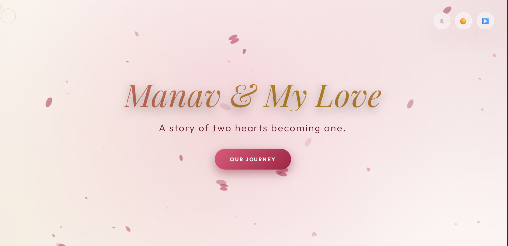
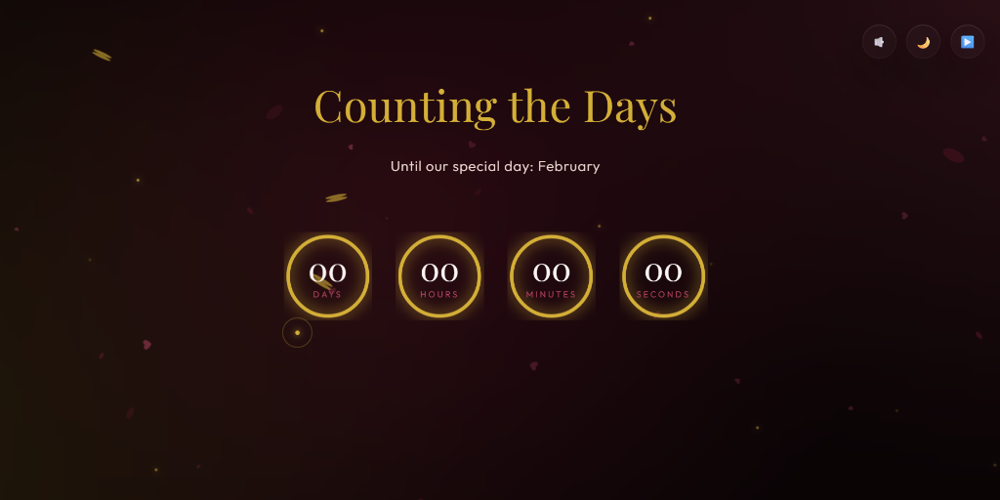

LOVE
A handcrafted cinematic web experience celebrating memories, emotions, storytelling and interactive design.

Digital Romance.
Purpose
To immortalize a personal relationship timeline through a medium that transcends a simple photo album. It transforms static memories into a breathing, interactive documentary.
Story
The project follows the chronological arc of two people meeting, falling in love, and building a life together, presented through meticulously curated visual chapters and audio.
Target Audience
Originally designed as an intimate, private gift, the architecture was later refined to serve as a flagship showcase of emotional web design for design agencies and creative directors.
Emotional Design Goals
Elicit genuine feeling through pacing. Force the user to slow down, listen to the ambient audio, and absorb the photography through deliberate, smooth scrolling interactions.
Atmosphere over information.
The interface steps out of the way. It uses a luxurious Gold and Burgundy palette to create warmth, while relying heavily on negative space to let the photography breathe.
Minimal UI
Standard navigation patterns were abandoned. The interface is reduced to invisible scroll triggers and subtle floating playback controls to maintain absolute immersion.
Editorial Spacing & Typography
Content is laid out like a high-end fashion magazine. Large serif headings dictate the emotional tone, while immense vertical padding forces the user to digest one thought at a time.
Motion Design
Every element enters the viewport with a soft, cinematic fade and scale. Nothing snaps instantly. The motion curve is calibrated to feel like a slow exhale.
Accessibility & Hierarchy
Despite the moody lighting, text contrast remains AA compliant. Visual hierarchy naturally guides the eye from the floating particles to the central imagery, then to the subtle captions.
Chapters, not sections.
Websites have sections; stories have chapters. The DOM is architected around emotional phases rather than structural div blocks. Each chapter introduces a new visual motif.
- The Journey: A vertical timeline anchoring the origin story.
- Memories: An asymmetrical masonry gallery breaking the rigid grid.
- Reasons: Floating glass cards dissecting the "Why."
- Countdown: A living clock tethering the digital space to a physical future event.
Alive in the browser.
- Floating Particles: A WebGL-inspired canvas layer simulating dust motes in sunlight.
- Ambient Lighting: Radial gradients that shift subtly based on cursor position.
- Music Controls: Seamlessly integrated audio API that doesn't interrupt the UX.
- Theme Switching: A fluid transition between "Day" and "Night" emotional states.
- Smooth Scrolling: Momentum-based scrolling that makes the page feel weighty and physical.
- Timeline Animations: SVGs that draw themselves as the user progresses downward.
- Hover Interactions: Cards that tilt gently against the mouse using 3D transforms.
- Glass Morphism: Deep background blur rendering the UI as frosted glass over memories.
The Living Countdown.

Temporal Engine
A living clock tethering the digital space to a physical future event. Built using dynamic JavaScript Date objects and elegant typography to build anticipation.
Poetry in Code.
The project leverages the absolute boundaries of modern CSS and Vanilla JavaScript to avoid the bloat of heavy WebGL libraries where possible. The responsive architecture uses CSS Grid for the masonry layouts, ensuring images scale flawlessly without JavaScript calculation.
The animation system relies entirely on Intersection Observers triggering hardware-accelerated CSS transforms (`translate3d`), guaranteeing a buttery 60 frames per second on mobile devices while running the heavy background particle canvas.
Engineering Emotion
- Balancing Beauty with Performance: Running a full-screen particle canvas alongside heavy blur filters and large imagery caused massive repaints. Solved by offloading animations to the GPU.
- Responsive Timeline: SVGs that draw paths correctly on a 4K monitor often break on an iPhone. The timeline was rebuilt using scalable vector math.
- Theme Consistency: Ensuring the "mood" felt correct whether the user toggled the Light or Dark theme required hand-tuning 40+ color variables.
The Impact
- Visual Quality: A truly cinematic experience that rivals high-end agency campaign sites.
- User Experience: Visitors report a feeling of calm and emotional resonance rarely felt on the web.
- Performance: Despite the heavy visual effects, the site achieves a 95+ Lighthouse score through aggressive asset optimization.
- Maintainability: The JSON-driven timeline architecture allows new chapters to be added without touching the core UI logic.
Lessons Learned
I learned that performance engineering isn't just about loading speeds—it's about frame rates. A dropped frame breaks immersion immediately. More importantly, I learned that web design can be deeply intimate. When you strip away conversion metrics and business goals, the browser is an incredibly powerful canvas for storytelling.
Future Improvements
The next iteration will evolve the platform from a static story into a living ecosystem. Planned features include a Custom Memory Uploader, a Dynamic Event Generator that builds chapters based on EXIF data, a Shared Journal syncing via WebSockets, and an integration for Interactive Maps plotting our journey geographically.